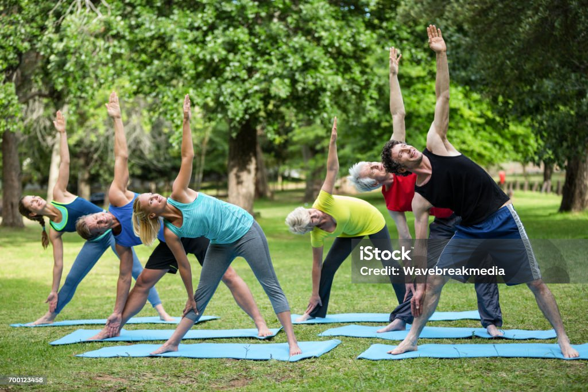

Genoux qui grincent en montant les escaliers, épaules sensibles à la musculation, hanches raides au réveil... Plus on reste actif, plus les articulations travaillent — et plus elles méritent qu'on en prenne soin. Bonne nouvelle : avec les bons réflexes, on peut rester sportif toute sa vie sans les abîmer.
Pourquoi vos articulations grincent ?
- Usure du cartilage : il amortit les chocs, mais se régénère lentement avec l'âge.
- Inflammation : surentraînement, mauvaise technique ou récupération insuffisante créent des micro-inflammations.
- Muscles stabilisateurs faibles : si le muscle ne fait pas son travail, l'articulation encaisse à sa place.
- Carences : collagène, oméga-3, vitamine D et hydratation sont le "carburant" du cartilage.

5 réflexes pour des articulations solides
- Échauffez-vous 10 minutes avant chaque séance : le cartilage se lubrifie en mouvement.
- Renforcez les muscles stabilisateurs (épaules, genoux, hanches) : c'est votre assurance-vie articulaire.
- Mangez assez de protéines et de collagène (bouillon d'os, œufs, poisson) + oméga-3 (sardines, noix).
- Hydratez-vous : le cartilage est composé à ~70% d'eau.
- Dormez : c'est pendant la nuit que les tissus se réparent.
Quand consulter ?
Gonflement, douleur aiguë persistante, articulation qui se dérobe : ce ne sont pas de simples courbatures. Dans ces cas, consultez un médecin ou un kinésithérapeute avant de poursuivre le sport.
💡 Notre recommandation : AMP Joint 10
Pour un soutien complet (collagène, curcuma, vitamine C et plus), notre équipe a sélectionné AMP Joint 10 : une formule complète pensée pour la mobilité et le confort articulaire des personnes actives.
Découvrir AMP Joint 10 →Conclusion
Vos articulations ne demandent qu'une chose : de l'attention. Échauffement, renforcement, alimentation ciblée et récupération — et vous pourrez continuer à bouger, courir et soulever pendant des décennies.